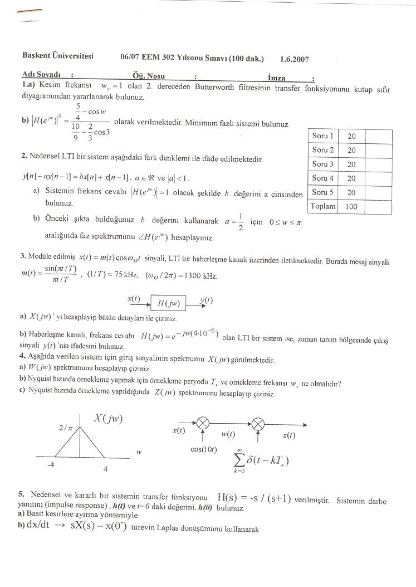
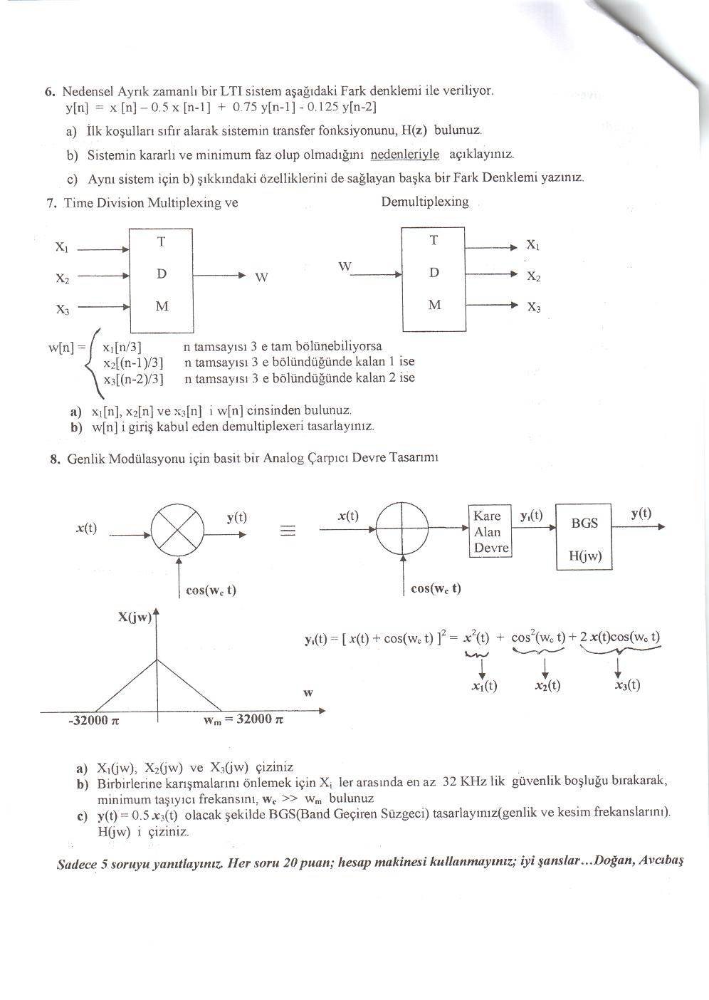

· EEM301
EEM301 Sinyaller ve Sistemler I: EEM 302 Yılsonu Sınavı (1 Haziran 2007), Çözümler ve Quiz 4–5
EEM301 – Sinyaller ve Sistemler I · 01.06.2007 · 16.10.2026
Bu yazı, EEM301 Sinyaller ve Sistemler I klasöründe duran, devam dersi EEM 302'nin 2006–2007 yılsonu sınavını (1.6.2007, 100 dakika) içeriyor. Sınav kâğıdı boş (öğrenci bilgisi yok) olarak taranmış; altında "Doğan, Avcıbaş" imzası var. Sekiz sorudan beşinin yanıtlanması isteniyor, her soru 20 puan, hesap makinesi kullanılmıyor. Sorular aşağıya metin olarak aktarıldı. Taramalar yazının sonunda ZIP olarak indirilebilir.
Sorular
1. a) Kesim frekansı w_c = 1 olan 2. dereceden Butterworth süzgecinin transfer fonksiyonunu kutup-sıfır diyagramından yararlanarak bulunuz. b) |H(e^(jw))|² = (5/4 − cos w) / (10/9 − (2/3) cos w) olarak verilmektedir. Minimum fazlı sistemi bulunuz.
2. Nedensel LTI bir sistem y[n] − a·y[n − 1] = b·x[n] + x[n − 1] (a gerçel, |a| < 1) fark denklemiyle ifade edilmektedir. a) Sistemin frekans cevabı |H(e^(jw))| = 1 olacak şekilde b değerini a cinsinden bulunuz. b) Bulduğunuz b değerini kullanarak a = 1/2 için 0 ≤ w ≤ π aralığında faz spektrumunu ∠H(e^(jw)) hesaplayınız.
3. Modüle edilmiş x(t) = m(t) cos ω₀t sinyali LTI bir haberleşme kanalı üzerinden iletilmektedir. Mesaj sinyali m(t) = sin(πt/T)/(πt/T), 1/T = 75 kHz, ω₀/2π = 1300 kHz. a) X(jw)'yi hesaplayıp bütün ayrıntılarıyla çiziniz. b) Haberleşme kanalı H(jw) = e^(−jw·4·10⁻⁶) frekans cevaplı bir LTI sistemse, zaman bölgesinde çıkış sinyali y(t)'nin ifadesini bulunuz.
4. X(jw) spektrumu −4 ile 4 arasında, tepe değeri 2/π olan bir üçgen. x(t) önce cos(10t) ile çarpılarak w(t), sonra Σ δ(t − kT_s) dürtü katarıyla çarpılarak z(t) elde ediliyor. a) W(jw) spektrumunu hesaplayıp çiziniz. b) Nyquist hızında örnekleme yapmak için örnekleme periyodu T_s ve örnekleme frekansı w_s ne olmalıdır? c) Nyquist hızında örnekleme yapıldığında Z(jw) spektrumunu hesaplayıp çiziniz.

Not: Kâğıtta dürtü katarının toplamı k = 0'dan ∞'a yazılmış; ideal örneklemede toplam k = −∞'dan ∞'a olmalıdır.
5. Nedensel ve kararlı bir sistemin transfer fonksiyonu H(s) = −s/(s + 1). Sistemin darbe yanıtını h(t) ve t = 0'daki değerini h(0) bulunuz: a) Basit kesirlere ayırma yöntemiyle, b) dx/dt → sX(s) − x(0⁻) türevin Laplace dönüşümünü kullanarak.
6. Nedensel ayrık zamanlı bir LTI sistem y[n] = x[n] − 0.5x[n − 1] + 0.75y[n − 1] − 0.125y[n − 2] fark denklemiyle veriliyor. a) İlk koşulları sıfır alarak sistemin transfer fonksiyonunu H(z) bulunuz. b) Sistemin kararlı ve minimum faz olup olmadığını nedenleriyle açıklayınız. c) Aynı sistem için (b)'deki özellikleri de sağlayan başka bir fark denklemi yazınız.
7. Zaman bölmeli çoğullama (Time Division Multiplexing) ve ayrıştırma (demultiplexing). Üç giriş x₁, x₂, x₃ TDM ile tek bir w[n] sinyalinde birleştiriliyor:
- w[n] = x₁[n/3], n tam sayısı 3'e tam bölünebiliyorsa
- w[n] = x₂[(n − 1)/3], n 3'e bölündüğünde kalan 1 ise
- w[n] = x₃[(n − 2)/3], n 3'e bölündüğünde kalan 2 ise
a) x₁[n], x₂[n] ve x₃[n]'i w[n] cinsinden bulunuz. b) w[n]'i giriş kabul eden demultiplexer'ı tasarlayınız.
8. Genlik modülasyonu için basit bir analog çarpıcı devre tasarımı. x(t)·cos(w_c t) çarpımı, x(t) ile cos(w_c t)'nin toplanıp kare alan devreden geçirilmesi ve ardından bant geçiren süzgeçle (BGS, H(jw)) elde ediliyor: y₁(t) = [x(t) + cos(w_c t)]² = x²(t) + cos²(w_c t) + 2x(t)cos(w_c t) = x₁(t) + x₂(t) + x₃(t). X(jw), −32000π ile w_m = 32000π arasında bir üçgen. a) X₁(jw), X₂(jw) ve X₃(jw)'yi çiziniz. b) Birbirine karışmalarını önlemek için X_i'ler arasında en az 32 kHz'lik güvenlik boşluğu bırakarak minimum taşıyıcı frekansını (w_c ≫ w_m) bulunuz. c) y(t) = 0.5x₃(t) olacak şekilde BGS'yi (genlik ve kesim frekanslarını) tasarlayınız; H(jw)'yi çiziniz.

Çözümler (2017 çalışma kâğıtlarından)
Klasörde aynı sınava 2017'de çalışılırken yazılmış el yazısı çözümler de var. Fotoğraflanmış sayfalardan metne aktarılan ana sonuçlar:
- Soru 2: |H(e^(jw))| = |b + e^(−jw)| / |1 − a·e^(−jw)| = 1 için b² + 2b cos w + 1 = 1 + a² − 2a cos w olmalı ⇒ b = −a. a = 1/2 (b = −1/2) için pay (cos w − ½) − j sin w, payda (1 − ½ cos w) + j½ sin w olduğundan faz: ∠H(e^(jw)) = −arctan(sin w / (cos w − ½)) − arctan(½ sin w / (1 − ½ cos w)) (birinci arctan'da payın bulunduğu çeyreğe dikkat edilmeli).
- Soru 3: M(jw), |w| < π/T aralığında genliği T olan dikdörtgen; X(jw) = ½[M(j(w − w₀)) + M(j(w + w₀))], yani ±2π·1300 kHz çevresinde iki dikdörtgen. Kanal saf gecikme olduğundan h(t) = δ(t − 4·10⁻⁶) ve y(t) = x(t − 4·10⁻⁶).
- Soru 4: W(jw), X(jw)'nin ±10'a kaydırılmış yarı genlikli kopyalarından oluşur (6 ≤ |w| ≤ 14); en yüksek frekans w_m = 14 olduğundan Nyquist örnekleme frekansı w_s = 28 rad/s, T_s = 2π/28 = π/14 s. Z(jw), W(jw)'nin w_s katlarında tekrarlanan kopyalarıdır.
- Soru 5: H(s) = −s/(s + 1) = −1 + 1/(s + 1) ⇒ h(t) = e^(−t)u(t) − δ(t); t = 0⁺'da h(0) = 1. Türev yöntemiyle: g(t) = h(t) + δ(t) için G(s) = 1/(s + 1), g(t) = e^(−t)u(t).
Not: Çözüm kâğıdında 3(b) için y(t) = 2m(t − 4·10⁻⁶)·cos(2π·10⁶(t − 4·10⁻⁶)) yazılmış. cos w₀t = ½(e^(jw₀t) + e^(−jw₀t)) olduğundan 2 çarpanı fazladır ve taşıyıcı 1300 kHz'dir: doğrusu y(t) = m(t − 4·10⁻⁶)·cos(2π·1.3·10⁶(t − 4·10⁻⁶)).
Aynı çalışmadaki Quiz 4 ve Quiz 5 çözümleri
Quiz 4 (z dönüşümü):
- X(z) = 3z⁻³/(1 − ¼z⁻¹)², x[n] sol taraflı. X(z) = 12z⁻²·[−z d/dz (1/(1 − ¼z⁻¹))] yazılıp n·x[n] ⟷ −z dX/dz ve kaydırma özelliğiyle x[n] = −12(n − 2)(¼)^(n−2) u[−n + 1].
- x[n] = e^(n⁴)cos(πn/12)u[n] − e^(n⁴)cos(πn/12)u[n − 1] = e^(n⁴)cos(πn/12)·δ[n] = δ[n] ⇒ X(z) = 1.
Quiz 5 (frekans yanıtı ve grup gecikmesi): H(e^(jw)) = e^(−jw)(1 − ½e^(jw))/(1 − ½e^(−jw)).
- |H(e^(jw))| = |e^(−jw)|·|r*/r| = 1 (tüm geçiren sistem).
- ∠H(e^(jw)) = −w − 2 tan⁻¹(½ sin w / (1 − ½ cos w)).
- grd(w) = −d∠H/dw = 1 + 2(½ cos w − ¼)/(5/4 − cos w).
- ∠H(e^(jπ/3)) = −π/3 − 2·(π/6) = −2π/3, grd(π/3) = 1 + 2·0 = 1.